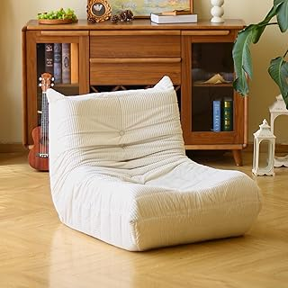

The AuraBloom Duo distinguishes itself with a design philosophy rooted in understated elegance and functional artistry. Its most striking feature is the harmonious interplay between the warm, natural wood mounting and the crystal-clear borosilicate glass vessels. The wood component, subtly finished to highlight its inherent grain, offers an organic anchor that grounds the piece, preventing it from feeling stark despite its minimalist leanings. The transparency of the glass, meanwhile, ensures that the burgeoning root systems and vibrant cuttings become the focal point, transforming the act of propagation into a captivating, ever-evolving display. It integrates seamlessly into a variety of aesthetic profiles, from contemporary Scandinavian to refined Japandi, lending an air of thoughtful curation to any wall it adorns.
Beyond its undeniable aesthetic appeal, the AuraBloom Duo impresses with its considered construction and practical utility. The natural wood is substantial, demonstrating a quality that speaks to longevity, while the robust borosilicate glass tubes are precisely crafted, designed for both durability and ease of maintenance. Installation is straightforward, requiring minimal effort to securely mount the unit, and the design allows for effortless removal and reinsertion of the glass vessels, simplifying the routine of changing water or rearranging cuttings. This thoughtful engineering ensures that maintaining your living art display is a pleasure, not a chore. The duo offers a resilient and elegant solution for cultivating small plant life, making the often-messy process of propagation a beautifully integrated aspect of interior decor.
The AuraBloom Wall Propagation Duo offers a sophisticated means to introduce verdant life into your home. It elegantly transforms any vertical surface into a dynamic botanical display, blending natural wood and clear glass into a statement of serene, minimalist design.
View Current Price| Material | Natural Wood and Borosilicate Glass |
| Key Feature | Wall-Mounted Propagation Station |
| Aesthetic Style | Minimalist Organic Modern |